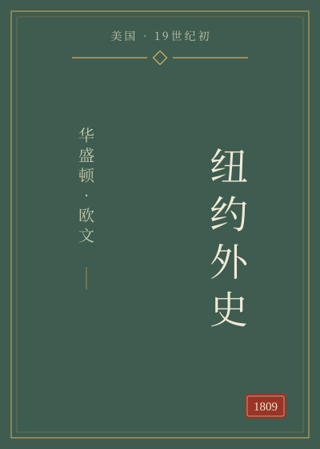
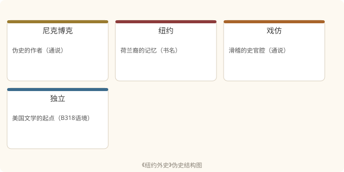

纽约外史
一、基本信息
| 作者 | 华盛顿·欧文 |
|---|---|
| 成书/出版 | 1809年（Britannica B318：纽约外史 (1809)） Washington Irving — Encyclopaedia Britannica（百科全书） |
| 国别/地区 | 美国 |
| 时代 | 近代 · 19世纪初 |
| 体裁 | 讽刺小说 |
| 语言 | 英语 |

《纽约外史》伪史结构图（主题·结构图）
二、创作背景
Britannica（B318）：A History of New York——欧文作品（作者页：jianWenzhaji 交叉——见闻札记）。
Britannica（B318）：欧文——美国文学之父说（作者页语境——待核）。
题材（通说待核）：'迪特里希·尼克博克'署名——荷兰殖民纽约的伪史戏仿。
三、内容脉络
（通说待核）尼克博克的'荷裔纽约史'：第一至七卷。
（通说待核）' harassing'（——通说待核）的滑稽史官腔。
四、主要人物表
| 人物 | 身份 | 说明 |
|---|---|---|
| 迪特里希·尼克博克 | 伪作者 | （通说待核） |
| 彼得·施托伊弗桑特 | 总督 | （通说待核） |
五、主题与艺术特点
- 伪史的戏仿（通说待核）。
- 荷兰裔纽约的记忆（通说待核）。
- '美国文学的独立'（作者页语境——待核）。
六、影响与评论
- Britannica：A History of New York (1809)（B318）。
Washington Irving — Encyclopaedia Britannica（百科全书） - Britannica：《见闻札记》为代表作（B318 交叉）。
Washington Irving — Encyclopaedia Britannica（百科全书）
七、阅读建议
难点
- 18-19世纪纽约史。
- '尼克博克'叙述腔。
- 《纽约外史》中译本（人民文学等——通说待核）。
- 英文原版（公有领域）。
欧文早期；先于《见闻札记》。
八、待核实
- 1809年出版细节待核。
- 尼克博克人名核对（通说）。
- '美国文学之父'定位待核（B318口径）。